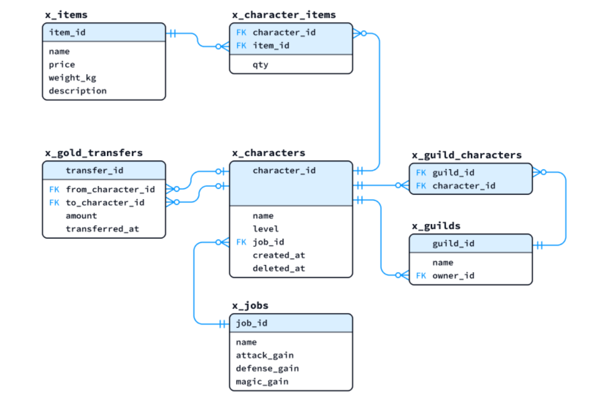

これまでの講義では、GROUP BY を使った集約処理や、HAVING を使った集約結果のフィルタリングを学びました。今回は、さらに高度な集計処理を行うためのウィンドウ関数 について学びます。ウィンドウ関数を使うと、各行を保持したまま集計やランク付けを行う ことができ、GROUP BY では実現困難だった処理を簡潔に記述できます。
ROW_NUMBER()、RANK()、SUM(...) OVER (...) などがあります。次の手順でSQL演習環境の立ち上げを行ってください。
SQL演習環境の動作確認@ 第04回講義また、 第10回講義で使用したテーブル群 (x_****) も使用します。演習環境のfrom-teacher/10/create-x_db.sql および insert-x_db_01.sql を再実行し、次のテーブル群を初期化しておいてください。

第05回講義ではGROUP BYを使って、指定したカラムをグループ化処理し、各グループに対して集約関数を適用する方法を学びました。
例えば、s_charactersテーブルに対して、各jobごとの平均レベル を求める行うSQLは以下のようになります。
SELECT
job,
AVG(level) AS "avg_level"
FROM
s_characters
GROUP BY
job
ORDER BY
job;job | avg_level ---------+------------- Fighter | 37.3 Monk | 36.0 Ninja | 54.0 Priest | 38.8 Samurai | 70.3 Wizard | 58.3 (6行)
GROUP BY を使うと、指定したカラムでグループ化し、各グループに対して集約関数を適用できます。しかし、以下のような問題点があります。
ウィンドウ関数は、OVER 句と組み合わせて使用する特殊な関数です。GROUP BY と異なり、各行を保持したまま、グループ内での集計やランク付けを行う ことができます。
(プロンプト例)
SQL におけるウィンドウ関数とは何ですか？ GROUP BY との違いを具体例を交えて説明してください。
PARTITION BY は、ウィンドウ関数において「グループ分け」を行うためのキーワードです。GROUP BY と似ていますが、行を圧縮せず、各行にグループ内での集計値やランクを付与できる点 が異なります。
job ごとの平均レベルを各キャラクター行に表示したい場合を考えます。
SELECT
name,
job,
level,
ROUND(
AVG(level) OVER (
PARTITION BY
job
),
1
) AS avg_level
FROM
s_characters
ORDER BY
job,
name;
name | job | level | avg_level ---------+---------+-------+----------- Oscar | Fighter | 44 | 37.2 Tom | Fighter | 1 | 37.2 Trudy | Fighter | 48 | 37.2 Wendy | Fighter | 56 | 37.2 Bob | Monk | 33 | 36.0 Ivan | Monk | 39 | 36.0 Eve | Ninja | 46 | 54.0 Zach | Ninja | 62 | 54.0 Alice | Priest | 42 | 38.7 Carol | Priest | 28 | 38.7 Marvin | Priest | 35 | 38.7 Trent | Priest | 50 | 38.7 Dave | Samurai | 68 | 70.3 Steve | Samurai | 70 | 70.3 Walter | Samurai | 73 | 70.3 Charlie | Wizard | 57 | 58.2 Ellen | Wizard | 51 | 58.2 Jack | Wizard | 61 | 58.2 Mallet | Wizard | 64 | 58.2 (19 行)
avg_level カラムには、各キャラクターが属する job（職業）ごとの平均 level が表示されています。この平均値は PARTITION BY job によって職業ごとにグループ分けされた上で計算されています。
GROUP BY を用いた集計とは異なり、元のデータの行数は変わらず、各キャラクターの name やlevel といった情報を保持したまま、「自分が属する職業の平均値」を各行に付加できる 点が特徴です。このように、PARTITION BY は各行ごとにグループ内の情報を比較したい場合 に適しています。
ORDER BY を OVER 句に追加すると、累積合計や累積平均を求めることができます。例えばx_charactersテーブルについて、キャラクターが作成された順に並べて、その時点までに作成されたキャラクターの平均レベルを各行に表示するSQLは以下のようになります。
SELECT
character_id,
name,
level,
created_at,
ROUND(
AVG(level) OVER (ORDER BY created_at),
2
) AS cumulative_avg_level
FROM
x_characters
WHERE
deleted_at IS NULL
ORDER BY
created_at;
character_id | name | level | created_at | cumulative_avg_level
-------------+---------+-------+---------------------+----------------------
1 | Marvin | 35 | 2020-09-23 13:32:00 | 35.00
2 | Zach | 62 | 2020-10-25 21:12:00 | 48.50
3 | Charlie | 57 | 2020-12-05 10:15:00 | 51.33
4 | Tom | 1 | 2020-12-05 18:40:00 | 38.75
5 | Ivan | 39 | 2021-02-15 09:05:00 | 38.80
6 | Alice | 42 | 2021-06-14 14:20:00 | 39.33
7 | Trudy | 48 | 2021-11-28 19:10:00 | 40.57
8 | Bob | 33 | 2022-03-22 11:45:00 | 39.63
11 | Ellen | 51 | 2022-08-30 20:55:00 | 40.89
10 | Oscar | 44 | 2022-11-10 16:30:00 | 41.20
12 | Dave | 68 | 2023-01-19 15:08:00 | 43.64
13 | Mallet | 64 | 2023-02-02 18:50:00 | 45.33
14 | Eve | 46 | 2023-09-07 10:17:00 | 45.38
16 | Steve | 70 | 2024-01-27 09:14:00 | 47.14
17 | Wendy | 56 | 2024-03-18 10:56:00 | 47.73
18 | Carol | 28 | 2024-05-11 11:42:00 | 46.50
19 | Jack | 61 | 2024-07-12 15:43:00 | 47.35
(17 行)
ORDER BY created_at をOVER 句に指定すると、集計は表の先頭行から現在の行までを対象として行われます。 そのため AVG(level) は、「そのキャラクターが作成された時点までの平均レベル」を表す累積平均になります。特別な範囲指定を書かなくても、ORDER BY を指定するだけで累積集計になる点がポイントです。
このような書き方は、途中経過の確認（時間の経過とともに値がどのように変化してきたかを確認したい場合や、ある時点までの平均や合計を、各行ごとに比較したい場合）に使用します。
ROWS BETWEEN を使うと、「直前N件」を対象とした移動平均を求めることができます。例えば、キャラクターを作成日時順に並べ、「自分を含む直近3人の平均レべル」を各行に表示するには以下のようなSQLを記述します。
SELECT
name,
level,
created_at,
ROUND(
AVG(level) OVER (
ORDER BY created_at
ROWS BETWEEN 2 PRECEDING AND CURRENT ROW
),
2
) AS avg_last_3
FROM
x_characters
WHERE
deleted_at IS NULL
ORDER BY
created_at;
name | level | created_at | avg_last_3 ---------+-------+---------------------+------------ Marvin | 35 | 2020-09-23 13:32:00 | 35.00 Zach | 62 | 2020-10-25 21:12:00 | 48.50 Charlie | 57 | 2020-12-05 10:15:00 | 51.33 Tom | 1 | 2020-12-05 18:40:00 | 40.00 Ivan | 39 | 2021-02-15 09:05:00 | 32.33 Alice | 42 | 2021-06-14 14:20:00 | 27.33 Trudy | 48 | 2021-11-28 19:10:00 | 43.00 Bob | 33 | 2022-03-22 11:45:00 | 41.00 Ellen | 51 | 2022-08-30 20:55:00 | 44.00 Oscar | 44 | 2022-11-10 16:30:00 | 42.67 Dave | 68 | 2023-01-19 15:08:00 | 54.33 Mallet | 64 | 2023-02-02 18:50:00 | 58.67 Eve | 46 | 2023-09-07 10:17:00 | 59.33 Steve | 70 | 2024-01-27 09:14:00 | 60.00 Wendy | 56 | 2024-03-18 10:56:00 | 57.33 Carol | 28 | 2024-05-11 11:42:00 | 51.33 Jack | 61 | 2024-07-12 15:43:00 | 48.33 (17 行)
ROWS BETWEEN 2 PRECEDING AND CURRENT ROW は、現在の行を含む直前2行 を集計対象にする指定です。
PARTITION BY と GROUP BY の最も大きな違いを一言で述べよ。
GROUP BY とウィンドウ関数のどちらが適しているか。
ROWS BETWEEN ）」を書かなくてもよい理由を述べよ。
ex-01_1.sql👉s_characters テーブルとx_jobs テーブルを用いて、職業（job）ごとの平均レベル avg_level_by_job を、各キャラクターの行に表示するSQLを記述せよ。ただし、平均値は小数第2位まで求めること。
模範解答
character_name | job_name | level | avg_level_by_job ----------------+----------+-------+------------------ Oscar | Fighter | 44 | 37.25 Tom | Fighter | 1 | 37.25 Trudy | Fighter | 48 | 37.25 Wendy | Fighter | 56 | 37.25 ～～～～～～～～～～～～～～省略～～～～～～～～～～～～～ Ellen | Wizard | 51 | 58.25 Jack | Wizard | 61 | 58.25 Mallet | Wizard | 64 | 58.25 (17 行)
ex-01_2.sql👉x_charactersテーブルと x_jobs テーブルを用いて、出力結果のように職業ごとに、キャラクターが作成された順での累積平均レベルcumulative_avg_level を表示するSQLを記述せよ。ただし、下記の条件を満たすこと。deleted_at IS NOT NULL）は除外するcharacter_name | job_name | level | created_at | cumulative_avg_level ----------------+----------+-------+---------------------+---------------------- Tom | Fighter | 1 | 2020-12-05 18:40:00 | 1.00 Trudy | Fighter | 48 | 2021-11-28 19:10:00 | 24.50 Oscar | Fighter | 44 | 2022-11-10 16:30:00 | 31.00 Wendy | Fighter | 56 | 2024-03-18 10:56:00 | 37.25 ～～～～～～～～～～～～～～～～～～～～省略～～～～～～～～～～～～～～～～～～～～～ Charlie | Wizard | 57 | 2020-12-05 10:15:00 | 57.00 Ellen | Wizard | 51 | 2022-08-30 20:55:00 | 54.00 Mallet | Wizard | 64 | 2023-02-02 18:50:00 | 57.33 Jack | Wizard | 61 | 2024-07-12 15:43:00 | 58.25 (17 行)
ex-01_3.sql👉x_character_items と x_items テーブルを用いて、各キャラクターが所持しているアイテムの合計金額を、アイテム ID の昇順で累積表示するSQLを記述せよ。ex-01_4.sql👉x_guild_characters、x_characters、x_character_items、x_items を用いて、ギルドごとに、アイテム総所持金額の累積合計を求めるSQLを記述せよ。
ex-01_5.sql👉キャラクターの成長分析をするために、職業（job）ごとに、キャラクターのレベルがどのように推移してきたかを詳しく確認したいと考えている。そこで、データベースに保存されているx_characters テーブルおよび x_jobs テーブルを用いて、以下の条件を満たすデータを取得するSQLを記述せよ。
name ）・職業名（job_name）・レベル（level）・作成日時（created_at）を表示すること。deleted_at に値が入っているもの）は分析対象から除外すること。name | job_name | level | created_at | cumulative_avg_level | moving_avg_level ---------+----------+-------+---------------------+----------------------+------------------ Zach | Ninja | 62 | 2020-10-25 21:12:00 | 62.00 | 62.00 Eve | Ninja | 46 | 2023-09-07 10:17:00 | 54.00 | 54.00 Dave | Samurai | 68 | 2023-01-19 15:08:00 | 68.00 | 68.00 Steve | Samurai | 70 | 2024-01-27 09:14:00 | 69.00 | 69.00 Charlie | Wizard | 57 | 2020-12-05 10:15:00 | 57.00 | 57.00 Ellen | Wizard | 51 | 2022-08-30 20:55:00 | 54.00 | 54.00 Mallet | Wizard | 64 | 2023-02-02 18:50:00 | 57.33 | 57.33 Jack | Wizard | 61 | 2024-07-12 15:43:00 | 58.25 | 58.67 (8 行)
ウィンドウ関数には、ランク付けを行う専用の関数があります。代表的なものが ROW_NUMBER()、RANK()、DENSE_RANK() です。
ROW_NUMBER() は、各グループ内で連番 を付与します。同値であっても異なる番号が振られます。例えば、各職業ごとに、最新のキャラクターを1人だけ取得するSQLは以下のようになります。
SELECT
name,
job_name,
level,
created_at
FROM
(
SELECT
c.name,
j.name AS job_name,
c.level,
c.created_at,
ROW_NUMBER() OVER (
PARTITION BY
c.job_id
ORDER BY
c.created_at DESC
) AS rn
FROM
x_characters c
INNER JOIN x_jobs j
ON c.job_id = j.job_id
WHERE
c.deleted_at IS NULL
) sub
WHERE
rn = 1
ORDER BY
job_name;
name | job_name | level | created_at -------+----------+-------+--------------------- Wendy | Fighter | 56 | 2024-03-18 10:56:00 Bob | Monk | 33 | 2022-03-22 11:45:00 Eve | Ninja | 46 | 2023-09-07 10:17:00 Carol | Priest | 28 | 2024-05-11 11:42:00 Steve | Samurai | 70 | 2024-01-27 09:14:00 Jack | Wizard | 61 | 2024-07-12 15:43:00 (6 行)
PARTITION BY job_id を指定すると、職業ごとにデータを区切り、それぞれの職業内で番号付けが行われます。ORDER BY created_at DESC により、各職業内のキャラクターは作成日時の新しい順に並べられます。ROW_NUMBER() は、並び替えられた順序に対して1, 2, 3, … と連番を振ります。その結果、各職業において最も新しく作成されたキャラクターが rn = 1 となります。
ROW_NUMBER() は、次のような場面で特に有効です。
RANK() と DENSE_RANK() は、同値に対する順位付けの方法が異なります。
RANK(): 同値の場合は同順位を付け、次順位は スキップ します（例: 1, 2, 2, 4）。DENSE_RANK(): 同値の場合は同順位を付け、次順位は スキップしません（例: 1, 2, 2, 3）。x_items テーブルに対して、価格（price）の高い順にそれぞれ順位を付ける場合は、次のようなSQLになります。
SELECT
name,
price,
RANK() OVER (
ORDER BY
price DESC
) AS "RANKの場合",
DENSE_RANK() OVER (
ORDER BY
price DESC
) AS "DENSE_RANKの場合"
FROM
x_items
ORDER BY
price DESC;
name | price | RANKの場合 | DENSE_RANKの場合
------------------+-------+------------+------------------
High Mana Potion | 5000 | 1 | 1
Giga Potion | 4000 | 2 | 2
Angel Feather | 1200 | 3 | 3
Mega Potion | 1200 | 3 | 3
Climbing Rope | 1000 | 5 | 4
Mana Potion | 1000 | 5 | 4
Torch | 820 | 7 | 5
Paralyze Cure | 600 | 8 | 6
High Potion | 600 | 8 | 6
Chimera Wing | 500 | 10 | 7
Antidote | 300 | 11 | 8
Potion | 200 | 12 | 9
(12 行)
実行結果を確認すると、価格が同じアイテム（例: Angel Feather と Mega Potion）に対して、RANK() は同じ順位（3位）を付与し、次の順位はスキップして5位となっています。一方、DENSE_RANK() は同じ順位（3位）を付与しますが、次の順位はスキップせず4位となっています。
ROW_NUMBER() と RANK() の違いを同値がある場合に着目して述べよ。
ROW_NUMBER() と RANK() のどちらを使うべきか。
ex-02_1.sql👉x_guild_charactersテーブルを使って、全キャラクターをlevel の高い順に並べ、上位5人に順位を付けするSQLを記述せよ。ただし、同じレベルの場合は同順位とし、順位は一意に振ること。また、論理削除（deleted_at IS NOT NULL）は除外する。
ex-02_2.sql👉x_characters と x_jobsを使って、職業ごとに level の高い順で順位を付け、各職業の上位2人を表示するSQLを記述せよ。同じlevelは同順位とし、論理削除は除外する。
ex-02_3.sql（EX）👉ゲーム運営チームは、職業ごとに「最近作成されたキャラクターが、どの程度のレベル帯にいるのか」を把握したい と考えている。
x_charactersテーブルとx_jobsテーブルを利用し、各職業について最新のキャラクター情報を確認できる SQL を記述せよ。
x_characters と x_jobs を内部結合し、論理削除されている キャラクター（deleted_at IS NOT NULL）は対象外とします。その上で、職業ごとにcreated_at の新しい順でキャラクターに順位を付け、各職業につき最新の 3 人のみを表示してください。表示結果には、キャラクター名、職業名、キャラクターのレベル に加えて、そのキャラクターが属する職業全体の平均レベルも併せて表示するものとします。
GROUPING SETS、ROLLUP、CUBE は、「集計の切り口（軸）」を変えた集計結果を、1つの SQL でまとめて取得するための仕組み です。通常のGROUP BY では、集計の単位は 1 通りしか指定できません。
たとえば、
GROUPING SETS、ROLLUP、CUBE を使うと、
GROUPING SETSを使うと、複数のGROUP BY を1クエリで実行できます。
-- 職業ごとの平均
SELECT
j.name AS job_name,
AVG(c.level) AS avg_level
FROM
x_characters c
INNER JOIN x_jobs j
ON c.job_id = j.job_id
WHERE
c.deleted_at IS NULL
GROUP BY
j.name
UNION ALL
-- 全体の平均
SELECT
'ALL' AS job_name,
ROUND(AVG(level),2) AS avg_level
FROM
x_characters
WHERE
deleted_at IS NULL;
SELECT
j.name AS job_name,
ROUND(AVG(c.level),2) AS avg_level
FROM
x_characters c
INNER JOIN x_jobs j
ON c.job_id = j.job_id
WHERE
c.deleted_at IS NULL
GROUP BY
GROUPING SETS (
(j.name), -- 職業ごと
() -- 全体
)
ORDER BY
job_name;
job_name | avg_level
----------+-----------
Fighter | 37.25
Monk | 36.00
Ninja | 54.00
Priest | 35.00
Samurai | 69.00
Wizard | 58.25
| 47.35
(7 行)
この例では、職業ごとの平均レベルと全キャラクター全体の平均レベルを、1つの SQL 文で同時に取得しています。
通常、GROUP BY を使った集計では、集計の単位（グループ）は 1 種類しか指定できません。そのため、
UNION ALL で結果を結合する必要があります。 GROUPING SETS を使うと、集計の単位を複数まとめて指定することができる ため、これらの集計を 1 回のクエリで行えます。
ROLLUP は、集計結果を「細かい単位 → まとめた単位 → 全体」 という順番で、一度に出してくれる仕組みです。
普通のGROUP BY は、「この条件でまとめる」と決めた粒度の集計しかできません。たとえば職業ごとに平均レベルを出す、と指定した場合、職業別の結果だけが返ってきます。全体の平均を知りたければ、別の SQL を書く必要があります。一方でROLLUP を使うと、まず職業ごとの平均レベルを出し、その結果をさらにまとめて、全キャラクターの平均レベルまで同時に計算してくれます。つまり、「個別の結果を見てから、全体像を確認する」という人間の考え方に近い集計 を、1 本の SQL で実現できます。結果には途中段階の「まとめ行」が含まれるため、集計対象の列が NULL になっている行が現れます。 この NULL はデータが欠けているのではなく、「ここからは上の区分をまとめた結果」という合図です。
簡単に言えば、ROLLUP は 細かく集計した結果を、段階的にまとめながら表示してくれるGROUP BYの拡張機能だと考えると理解しやすいです。
SELECT
j.name AS job_name,
ROUND(AVG(c.level), 2) AS avg_level
FROM
x_characters c
INNER JOIN x_jobs j
ON c.job_id = j.job_id
WHERE
c.deleted_at IS NULL
GROUP BY
ROLLUP(j.name)
ORDER BY
j.name;
job_name | avg_level
----------+-----------
Fighter | 37.25
Monk | 36.00
Ninja | 54.00
Priest | 35.00
Samurai | 69.00
Wizard | 58.25
| 47.35
(7 行)
CUBE は、すべての組み合わせの集計を行います。GROUP BY CUBE (A,B)は、GROUPING SETS ((A, B), (A), (B), ()) と同等です。
SELECT
j.name AS job_name,
g.name AS guild_name,
ROUND(AVG(c.level), 2) AS avg_level
FROM
x_characters c
INNER JOIN x_jobs j
ON c.job_id = j.job_id
INNER JOIN x_guild_characters gc
ON c.character_id = gc.character_id
INNER JOIN x_guilds g
ON gc.guild_id = g.guild_id
WHERE
c.deleted_at IS NULL
GROUP BY
CUBE(j.name, g.name)
ORDER BY
j.name,
g.name;
job_name | guild_name | avg_level
----------+------------+-----------
Fighter | D.D.D | 56.00
Fighter | Yamato | 48.00
Fighter | hameln | 44.00
Fighter | | 49.33
Monk | hameln | 33.00
Monk | | 33.00
Ninja | D.D.D | 54.00
Ninja | | 54.00
Priest | D.D.D | 42.00
Priest | Yamato | 38.50
Priest | | 39.67
Samurai | Yamato | 68.00
Samurai | hameln | 69.00
Samurai | | 68.67
Wizard | D.D.D | 57.50
Wizard | hameln | 61.00
Wizard | | 58.67
| D.D.D | 53.50
| Yamato | 48.25
| hameln | 55.20
| | 52.67
(21 行)
ROLLUP は、職業別集計や全体集計など、複数の集計結果を一度に作成できる便利な機能です。 複数の集計結果を一度に作成できる便利な機能です。しかし、ROLLUP だけを使用した場合、集計行は通常のデータ行と同じ形式で出力されるため、どの行が「職業別の集計」で、どの行が「全体の集計」なのかが結果からは分かりにくくなります。特に、全体集計の行では集計軸となるカラムがNULL になるため、「データが欠けているのか」「集計行なのか」を見分けることが困難になります。
この問題を解決するために使われるのが GROUPING関数です。GROUPING関数 は、その行が通常のデータ行なのか、それとも ROLLUP によって追加された集計行なのかを判別するための関数であり、集計対象として使われていないカラムに対しては 1、使われている場合は 0 を返します。
ROLLUP と GROUPING関数 を組み合わせることで、集計行に対して「これは職業別の集計である」「これは全体の集計である」といった意味を明示的に付与することができます。その結果、CASE 式などを用いて集計行にラベルを付けたり、表示名を分かりやすく変更したりすることが可能になります。
つまり、ROLLUP は「集計結果を作るための機能」であり、GROUPING関数 は「その集計結果の意味を人に伝えるための機能」です。この二つを併用することで、単に数値を計算するだけでなく、その結果を他人が見ても理解しやすい形で提示できる SQL を書くことができるようになります。
このように、GROUPING と ROLLUP を合わせて使う最大のメリットは、集計結果の可読性と実用性を大きく向上させられる点にあります。
(プロンプト例)
ROLLUP と GROUPING の関係がよく分かりません。なぜROLLUP だけでは不十分なのか、GROUPINGが「何を判別しているのか」を、NULL が出てくる理由と結びつけて説明してください。
ROLLUP と CUBE の集計範囲の違いを説明しなさい。
ROLLUP の結果で NULL が出る行を、そのまま表示すると問題になる理由を述べなさい。
GROUPING 関数と CASE 式を組み合わせる目的を説明しなさい。
本コンテンツの作成時間：19.4時間